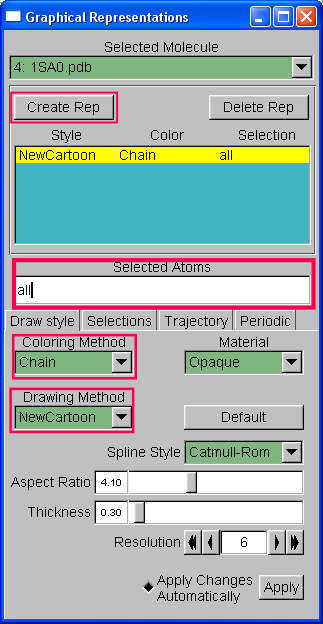

In this lab, you will practice viewing protein structures and structural alignments.
Get structures from the PDB.
Use VMD to produce informative figures.
Search for structural analogs in the PDB database.
Identify argument for and against the assignment of homology between a viral protein and other structural analogs.
VMD is freely available software for vizualizing protein structures. You need to download (Windows, MacOSX, or Linux) and then install the software.
Go to the NCBI
website.
Search for a structure using the PDB key 1HTM
as search argument. Follow the link to the NCBI entry, then
onto the PDB database (PDB ID hyperlink at the top of the page).
|
You should be directed to the PDB itself. Near the top of the "structure summary" page, there are three items. Download the structure into a local folder as a PDB (text). By opening the 1HTM.pdb file in a text editor, answer the following questions: Question 1: What laboratory techinque was used to solve the structure? Question 2: What is the source taxon id and name for this structure? Question 3: What is type of element is the first atom in the structure and what is its X, Y, Z coordinates?
|
 |
Revisit the PDB page for IHTM. An all vs all structure alignments have been pre-computed by the PDB. Browse these search results accessible from the “3D Similarity” tab.
Question 5: What algorithm is used to produce these structural alignments?
Question 6: How many similar structures were found for chain A?
For chain B structural results answer the following:
Question 7: Report the PDB ID, name, RMSD, length, and identity of the top hit.
“View” this top hit to see the pairwise report. Download the alignment in PDB format.
Unfortunately, VMD will not load these alignment files. Therefore, as true bioinformaticians we have to hack them slightly to work. The alignment file contains the two molecules one after the other (look for “ENDMDL” to indicate the seperation between the two). CUT the second molecule from this alignment file and PASTE it in a new text file (“alignment2.pdb” if you like).
Now load each of these files into VMD one at a time, ensuring you select “New Molecule” in the file load dialog before loading each one.
As before use the “Representation”
to produce a nice looking figure that clearly shows the two
molecules. Try coloring them differently “Coloring Method”->
Color ID and also possibly using some transparency (instead of
opaque). Note that you need to select the molecule from the drop down
box at the top of the Representations dialog.
Question 8: Include an image of the aligned structures along with a figure legend.
Question 9: Based on this structural alignment and the sequence identity do you think these two structures are homologs?
Repeat questions 7, 8, and 9 with the second best hit (as questions 10, 11, 12).
That's
it! Please email or hand in your answers by next Thursday, March 21.